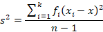
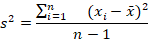
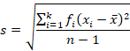
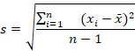

Las medidas de tendencia central se llaman así porque son estadísticas que representan el punto central o promedio de un conjunto de datos. Estas medidas, que incluyen la media, la mediana y la moda, proporcionan una idea de dónde se agrupan o tienden a concentrarse los valores en un conjunto de datos, lo que ayuda a resumir su distribución y a comprender mejor la tendencia central de los datos.
La media, también conocida como promedio, es una medida de tendencia central que se calcula sumando todos los valores en un conjunto de datos y luego dividiendo la suma por el número de valores.
Media = (Suma de todos los valores) / (Número de valores)
La moda es una medida de tendencia central que representa el valor que aparece con mayor frecuencia en un conjunto de datos. En otras palabras, es el valor más común o popular en un conjunto de datos. La moda es útil para identificar patrones y preferencias en datos, especialmente en situaciones donde se busca comprender qué valores son más frecuentes o populares en una muestra.
La mediana es una medida de tendencia central que representa el valor central en un conjunto de datos cuando se ordenan de menor a mayor. Para calcularla:
Ordena los datos de menor a mayor. Si tienes un número impar de datos, la mediana es el valor que está justo en el medio de la lista ordenada, si tienes un número par de datos, la mediana es el promedio de los dos valores del medio.
La mediana es útil cuando se busca una representación de la posición central en un conjunto de datos que puede ser menos afectada por valores extremos o atípicos. Esto la hace especialmente útil en datos sesgados.
* Para calcular la media, mediana y moda de datos no agrupados, se utilizan fórmulas diferentes a las de los datos agrupados. En el caso de los datos no agrupados, la media se calcula sumando todos los valores y dividiendo el resultado por el número de valores. La mediana se encuentra en el valor medio de los datos ordenados. La moda es el valor que aparece con mayor frecuencia en el conjunto de datos.
* En el caso de los datos agrupados, la media se calcula sumando los productos de la frecuencia y la marca de clase de cada intervalo y dividiendo el resultado por el número total de datos. La mediana se encuentra en el valor medio del intervalo que contiene la mediana. La moda es el valor que aparece con mayor frecuencia en el intervalo que contiene la moda.
Las medidas de dispersión se llaman así porque indican cuánto se extienden o dispersan los valores en un conjunto de datos. Miden la variabilidad o la diferencia entre los valores individuales en relación con alguna medida central, como la media. Estas medidas, que incluyen la varianza y la desviación estándar, proporcionan información sobre la dispersión de los datos, lo que es útil para comprender cuán agrupados o dispersos están los valores en una distribución estadística.
La varianza es una medida estadística que cuantifica cuán dispersos o alejados están los valores individuales en un conjunto de datos con respecto a la media o promedio de esos datos. Una varianza alta indica una mayor dispersión de datos alrededor de la media, mientras que una varianza baja indica que los valores tienden a estar más cerca de la media. La varianza se calcula tomando la diferencia entre cada valor y la media, elevando al cuadrado estas diferencias, y luego promediándolas. Es una medida clave para comprender la variabilidad en un conjunto de datos y se utiliza comúnmente en estadísticas y análisis de datos.
La desviación típica, también conocida como desviación estándar, es una medida estadística que proporciona una estimación de cuánto se desvían típicamente los valores individuales en un conjunto de datos con respecto a la media o promedio de esos datos. En otras palabras, mide la dispersión o variabilidad de los datos alrededor de la media. Una desviación estándar más grande indica una mayor dispersión de datos, mientras que una desviación estándar más pequeña sugiere que los valores tienden a estar más cerca de la media. La desviación estándar se calcula tomando la raíz cuadrada de la varianza, y es una medida fundamental en estadísticas y análisis de datos para comprender la consistencia o variabilidad de los datos.
El muestreo aleatorio es un método de selección de muestras en el que cada elemento de una población tiene una probabilidad igual de ser incluido en la muestra. Es un enfoque imparcial que se basa en la aleatoriedad y se utiliza para obtener una representación justa y no sesgada de la población total.
El muestreo estratificado, por otro lado, es un enfoque en el que se divide la población en subgrupos (estratos) con características similares, y luego se toma una muestra aleatoria de cada estrato. Esto se hace para garantizar que los diferentes grupos dentro de la población estén representados adecuadamente en la muestra, lo que puede ser útil cuando existen diferencias significativas entre subgrupos y se quiere asegurar una precisión en la estimación de parámetros.
| Medida | Datos agrupados | Datos sin agrupar |
|---|---|---|
| Media | Se multiplica cada valor por su frecuencia y se divide por la suma de estos productos por el número total de valores. | Se suman todos los valores y se dividen por el número total de valores. |
| Moda | Se encuentra el intervalo que contiene el valor modal y se utiliza para calcular el valor exacto. | Se encuentra el valor que aparece con mayor frecuencia. |
| Mediana | Se encuentra el intervalo que contiene el valor central y se utiliza una fórmula para calcular el valor exacto. | Se ordenan los valores de menor a mayor y se selecciona el valor que se encuentra en el centro. |
| Varianza |  |  |
| Desviación |  |  |
Los datos agrupados y no agrupados son dos tipos de datos que se diferencian por la forma en que se organizan. Los datos no agrupados son datos sin procesar que se presentan tal cual han sido recopilados. Por otro lado, los datos agrupados se han clasificado en categorías según características similares. Los datos agrupados y no agrupados pueden ser de tipo cualitativo o cuantitativo. Los datos agrupados se pueden representar por histogramas y tablas de frecuencia con límites de clase, mientras que los datos no agrupados se pueden representar por marcas de conteo.
https://matematicavariacionespermutaciones.blogspot.com/p/principios-del-analisiscombinatorio.html
Regla de multiplicación. Se pueden formar 8 números de tres cifras. Cada lugar de dígitos (centenas, decenas y unidades) tiene 2 posibilidades (ya sea 1 o 2) y 2^3 es igual a 8.
Hay 120 formas de organizarlos. Este es un problema de permutación de 6 elementos tomados de 3 en 3, que se calcula como 6P3 = 6! / (6-3)! = 120
Regla de multiplicación. Se pueden formar 125 números diferentes de tres cifras. Nuevamente, cada lugar de dígitos tiene 5 posibilidades, y 5^3 = 125.
Para nombrar a sus 3 hijos de manera distinta, la madre tiene 3 opciones para el primer hijo, 2 opciones para el segundo y finalmente 1 opción para el tercer hijo. Por lo tanto, el número total de maneras diferente en que los puede nombrar es de 6 maneras distintas (3*2*1 = 6).
Problema de permutación con repetición. Se tienen 6 dígitos para llenar 6 lugares, pero algunos de los dígitos se repiten. Entonces, el número total de números de 6 cifras es 6! / (3! * 2!) = 60 números distintos.
Para invitar 5 de las 8 amigas, se puede usar la combinación. El número de maneras en que Rosa puede invitar a 5 amigas es C(8,5) = 56.
Combinación. El número de maneras en que se puede formar el comité es C(3, 2) * C(5, 3) * C(4, 2) = 3*10* 6 = 180 maneras diferentes.
Combinaciones con repetición. El número de combinaciones posibles sería C(4 + 3 - 1, 3) = C(6, 3) = 20 combinaciones diferentes.